필로소피
필로소피 AI 교육 · 지난 시간에 이어서
AI 시대의 과제
과제를 내고, 직접 해 보기까지
많은 교수님들의 고민
학생
AI 활용
과제 제출
이 과제, 어떻게 평가할까요?
“AI를 쓸 거면
제대로 써봐라”
제대로 써봐라”
그렇다면 과제는 어떻게 내 주면 좋을까?
그 과제를 제가 직접 해 본 과정까지 보여드립니다
옛날식 과제
1SWOT의 개념을 설명하고
2엔비디아 vs AMD를 비교한 글을
3A4 다섯 장 이내로 작성해 와라
S
W
O
T
요즘식 과제
차별점이 있는
SWOT 분석 앱 만들기
SWOT 분석 앱 만들기
그 앱으로
NVIDIA vs AMD 비교
NVIDIA vs AMD 비교
과정을 캡처해서
제출
제출
“차별점이 있는” 앱이란?
애널리스트를 위한SWOT 분석 앱
개발자를 위한SWOT 분석 앱
나만의 ???SWOT 분석 앱
다른 사람이 만들지 않았을 법한 앱
AI, 적극 사용해도 됩니다
AI를 쓴 과정은
전부 캡처해서 제출
전부 캡처해서 제출
과정이 자세할수록고득점
1첫 프롬프트
2과정 캡처
310회 개선
4차별점 시연
첫 프롬프트는 10줄 이상
1
2
3
4
5
6
7
8
9
10
직접 써도 OK
AI로 만들어도 OK
만든 과정은 캡처!
1첫 프롬프트
2과정 캡처
310회 개선
4차별점 시연
앱 만드는 과정을 하나하나 캡처
어떤 AI 툴?
Claude Code안티그래비티Codex
얼마나, 어떻게?
총 소요 시간GitHub 업로드커밋 횟수
어디에 배포?
NetlifyVercel
1첫 프롬프트
2과정 캡처
310회 개선
4차별점 시연
0회+
완성된 앱을
10회 이상 개선
10회 이상 개선
커밋 기록 = 코드를 바꾸고 올릴 때마다 남는 기록
1첫 프롬프트
2과정 캡처
310회 개선
4차별점 시연
내 SWOT 앱은
무엇이 다른가?
무엇이 다른가?
다른 사람들 앞에서
TV · 컴퓨터에 띄워
직접 시연!
같은 AI를 써도
단 한 줄로“이런 앱 만들어 줘” 하고 끝
≠
여러 차례 바꿔 보고 고민AI를 썼지만 생각을 더한 앱
큰 차이가 납니다
아주 간단하게 만들지 말고
고민은 많이,
머리도 많이
머리도 많이
AI는 많이 써도 됩니다
이게 제가 생각한 AI 시대의 과제
제가 직접 해 봤습니다
프롬프트
Claude Code
GitHub
Netlify 배포
앱 완성
개선 × 3
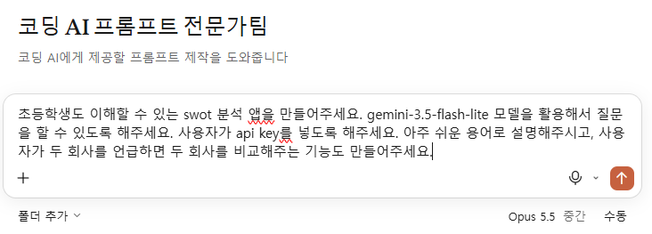
실습 01프롬프트 만들기
Claude 프로젝트에
만들 앱 설명하기
만들 앱 설명하기
초등학생도 이해하는 SWOT 앱
Gemini 3.5 Flash-Lite로 질문
API 키는 사용자가 직접
아주 쉬운 용어로
두 회사 비교 기능
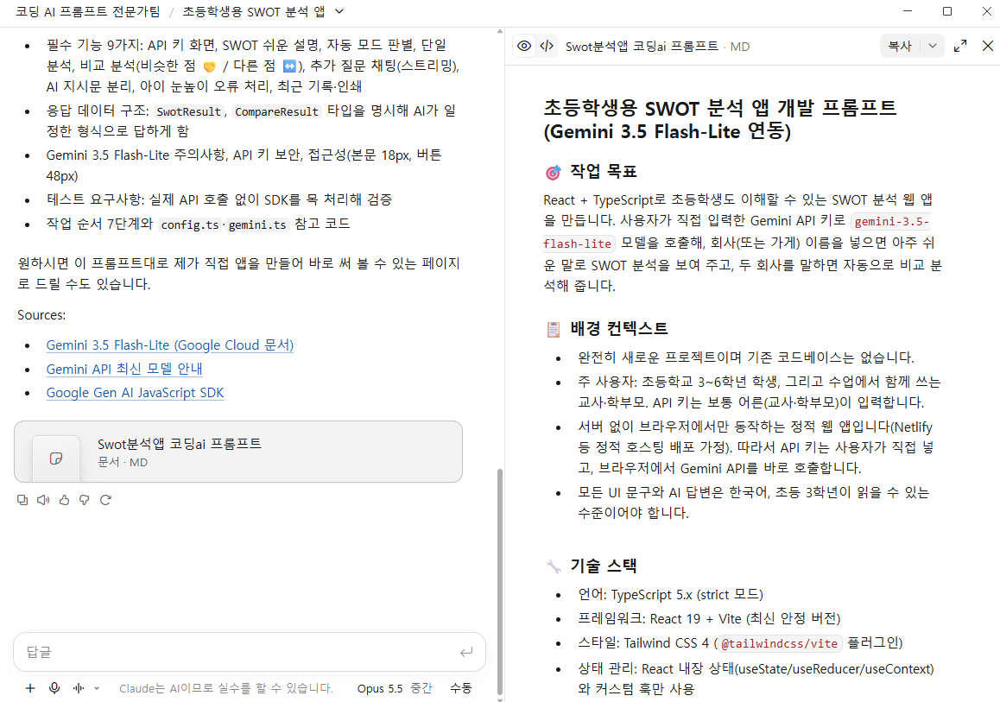
실습 01프롬프트 만들기
프로젝트가 만들어 준
개발 프롬프트
개발 프롬프트
작업 목표 · 배경
컨텍스트 · 기술 스택
→ 열 줄이 훌쩍 넘는다
평가 항목 ① 충족
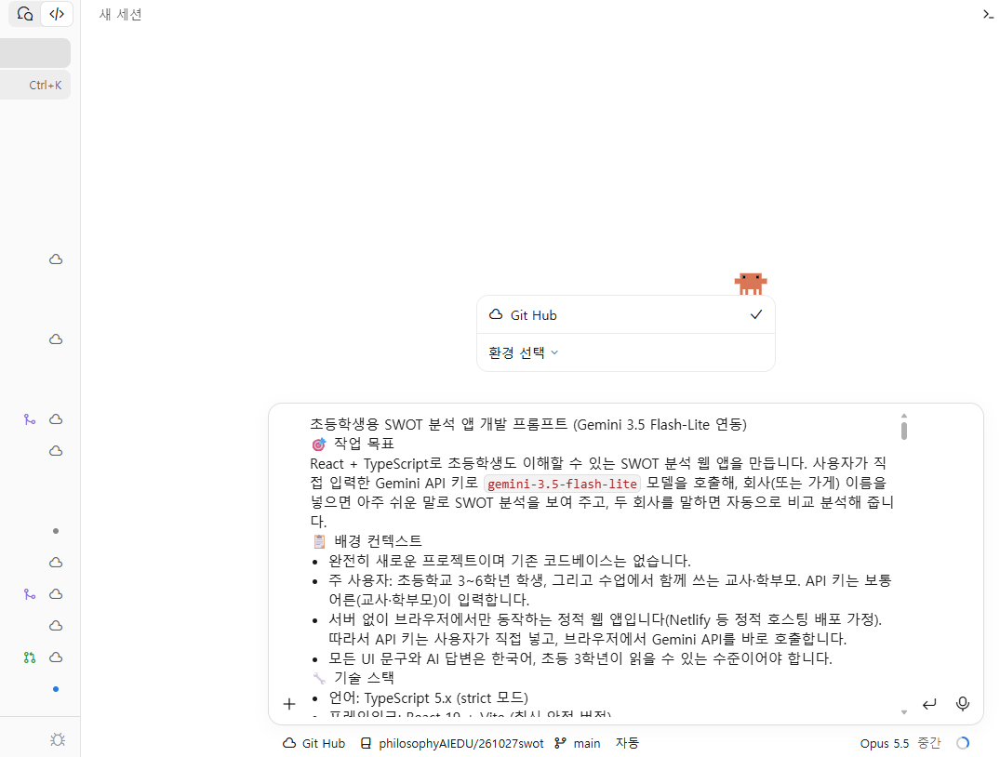
실습 02Claude Code로 코딩
Claude Code에
프롬프트 넣기
프롬프트 넣기
만든 프롬프트를 그대로 붙여넣기
열 줄 이상 ✓
이 과정도 캡처!
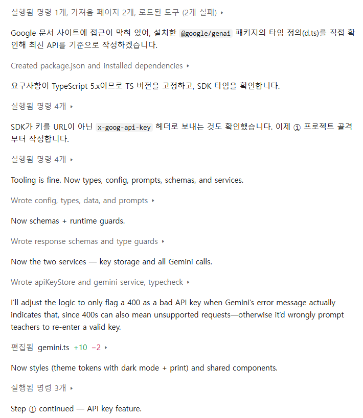
실습 02Claude Code로 코딩
AI가 코드를
쭉 작성합니다
쭉 작성합니다
패키지 설치 → 화면 → API 연결
알아서 끝까지 진행
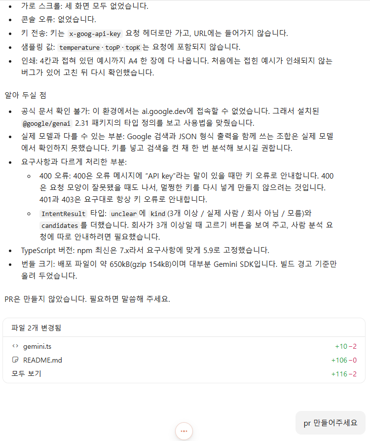
실습 02Claude Code로 코딩
작업 완료 —
PR은 아직
PR은 아직
끝까지 코드 작성 완료
PR은 아직 안 만들었대요
→ “PR 만들어줘”
이 정도 용어는 알아 두세요
내가 짠 코드
PR
Pull Request
“올려도 될까요?”
Pull Request
“올려도 될까요?”
Merge
병합
기존 코드와 합치기
병합
기존 코드와 합치기
Claude Code에게 “PR 만들고 merge 해줘”
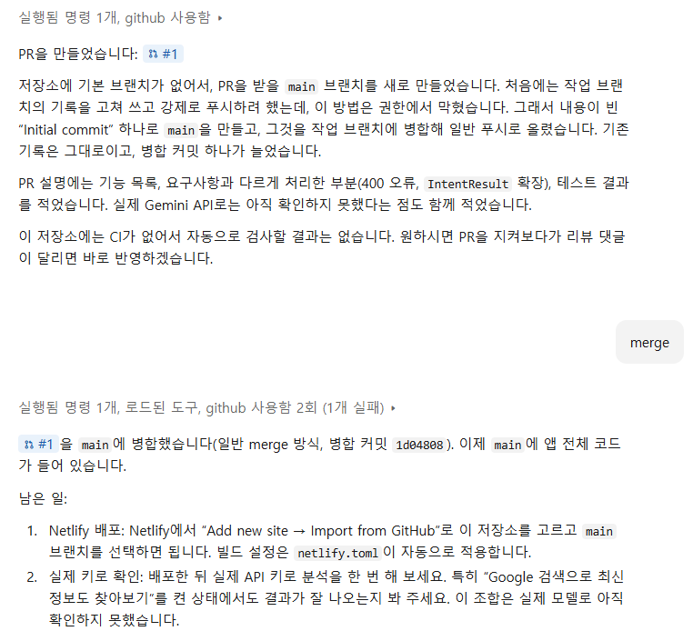
실습 02Claude Code로 코딩
main에
병합 완료
병합 완료
PR #1 → main 병합
코드가 합쳐졌어요
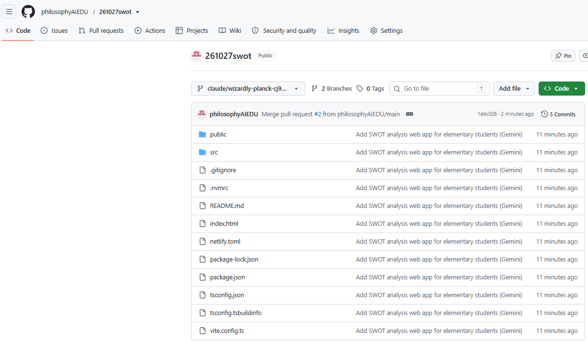
실습 03GitHub 확인
GitHub에
코드가 올라갔어요
코드가 올라갔어요
저장소 261027swot
SWOT 앱 파일들이 한가득
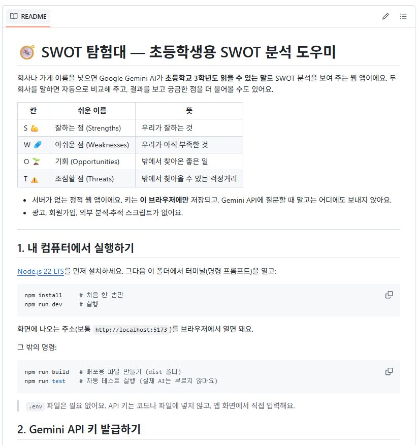
실습 03GitHub 확인
README —
SWOT 탐험대
SWOT 탐험대
초등학생용 SWOT 분석 도우미
S잘하는 점 (Strength)
W아쉬운 점 (Weakness)
O기회 (Opportunity)
T조심할 점 (Threat)
이런 앱을 만들면서 학생이 배웁니다
예전 — 워드로 SWOT 설명문 작성요즘은 AI가 너무 잘 써서 사고할 필요가 없어짐
지금 — 앱을 만들고 직접 고치면서그 과정에서 SWOT를 공부하게 된다
실습 04Netlify 배포
이 저장소를
Netlify에 연결
Netlify에 연결
방금 본 GitHub 저장소
261027swot 연결 → 배포
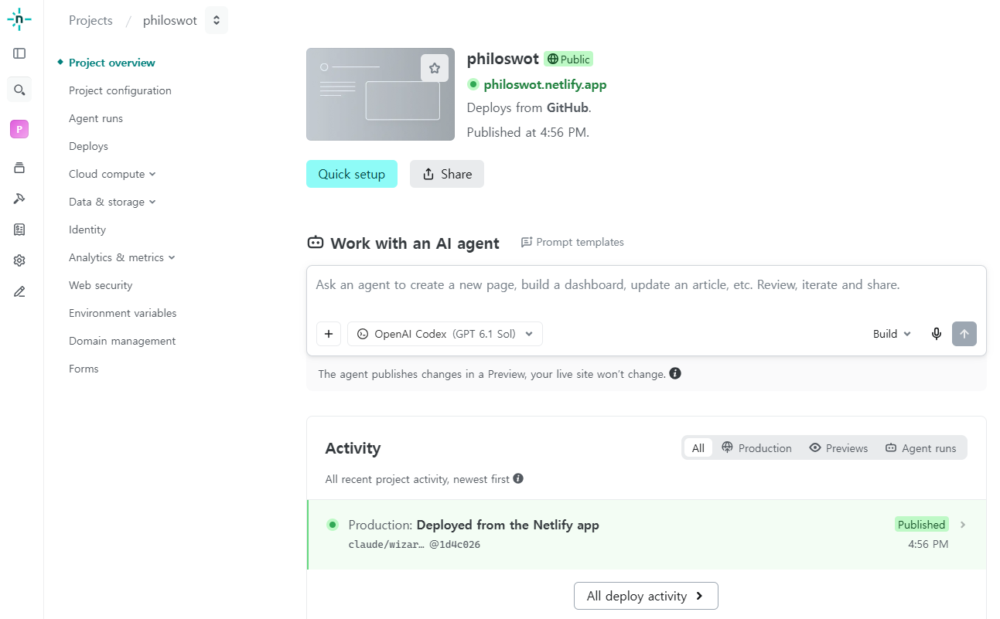
실습 04Netlify 배포
Netlify에서
배포하기
배포하기
① Add new project
② GitHub 선택
③ 내 저장소 선택
④ Deploy!
초록색 앱 주소 = 배포 성공
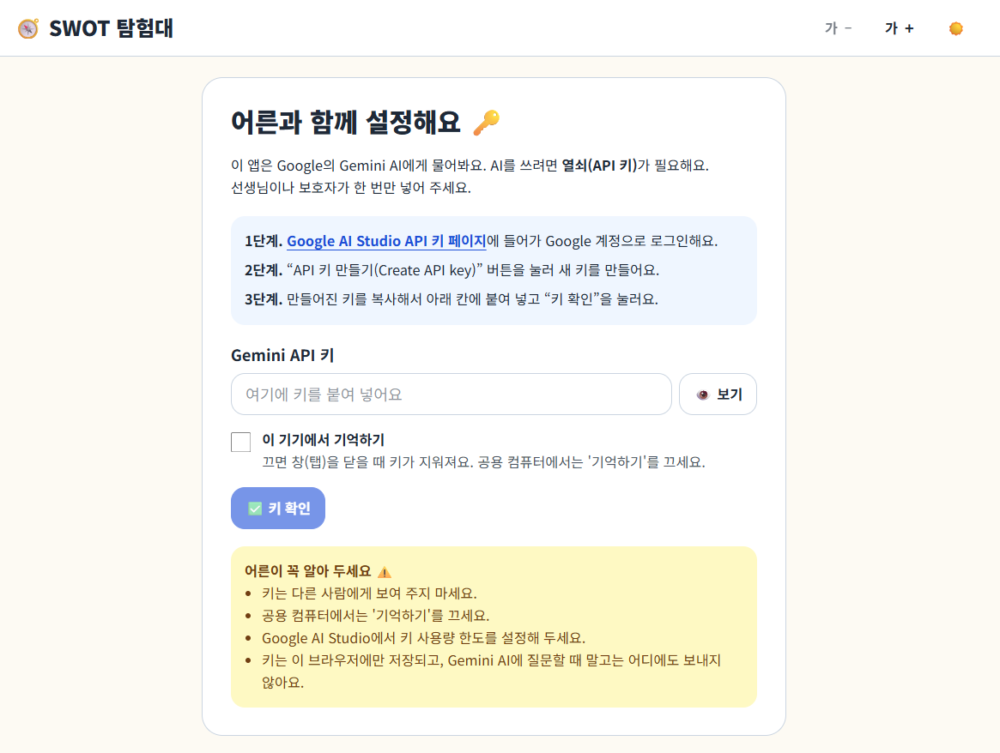
실습 05Gemini API 키
앱이 Gemini API 키를
물어봐요
물어봐요
SWOT 탐험대 첫 화면
Gemini API 키를 넣는 칸
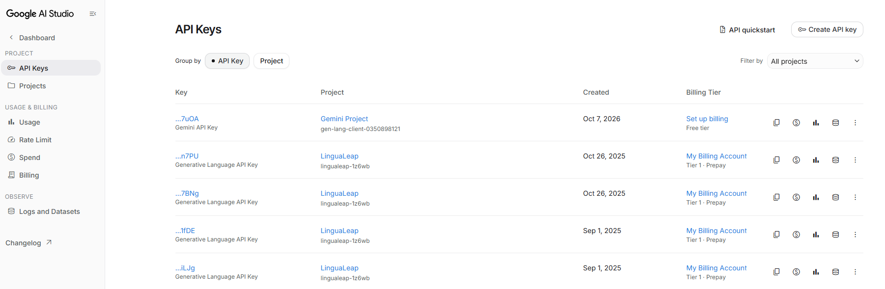
실습 05Gemini API 키
Google AI Studio에서
API 키 만들기
API 키 만들기
aistudio.google.com
API 키 하나 만들기
→ Create API key
여기서 중요한 것
Gemini API는
무료 티어로도 쓸 수 있어요
무료 티어로도 쓸 수 있어요
11분에 몇 회 정도는 무료
2API 키 테스트할 때는 무료로 먼저 써 보기
3가장 최신 모델을 빼면 무료 — 모델 목록 확인!
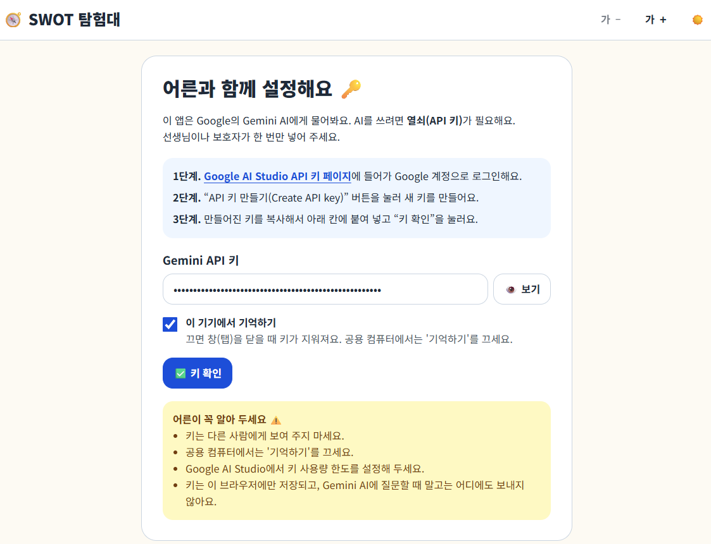
실습 05Gemini API 키
키를 넣고
‘기억하기’ 설정
‘기억하기’ 설정
만든 키를 붙여넣기
이 기기에서 기억하기
내 컴퓨터에서만 ✓
다른 사람 컴퓨터라면
체크하지 마세요
체크하지 마세요
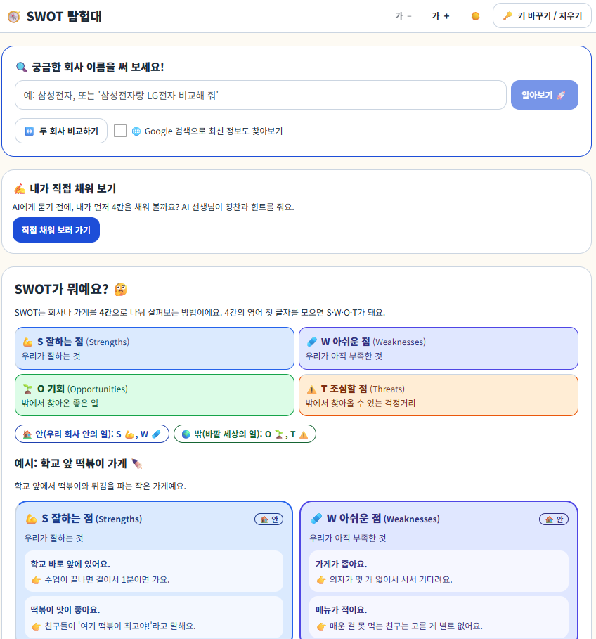
실습 06완성된 앱 써보기
앱이
완성됐어요!
완성됐어요!
궁금한 회사 이름 써보기
두 회사 비교하기
내가 직접 SWOT 채우기
SWOT 설명까지
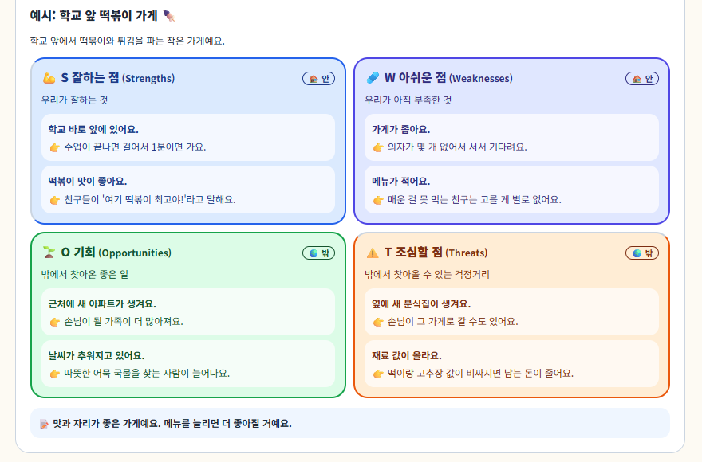
실습 06완성된 앱 써보기
예시 —
학교 앞 떡볶이 가게
학교 앞 떡볶이 가게
S학교 바로 앞, 맛있다
W좁고, 메뉴가 적다
보면서 배우고, 만들면서 익히기
한 줄 평까지 정리
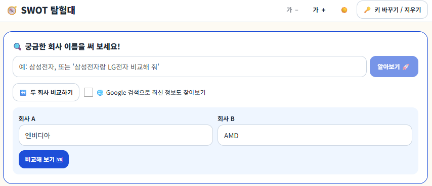
실습 06완성된 앱 써보기
두 회사
비교하기
비교하기
회사 A · 엔비디아
회사 B · AMD
과제에서 내준 바로 그 비교!
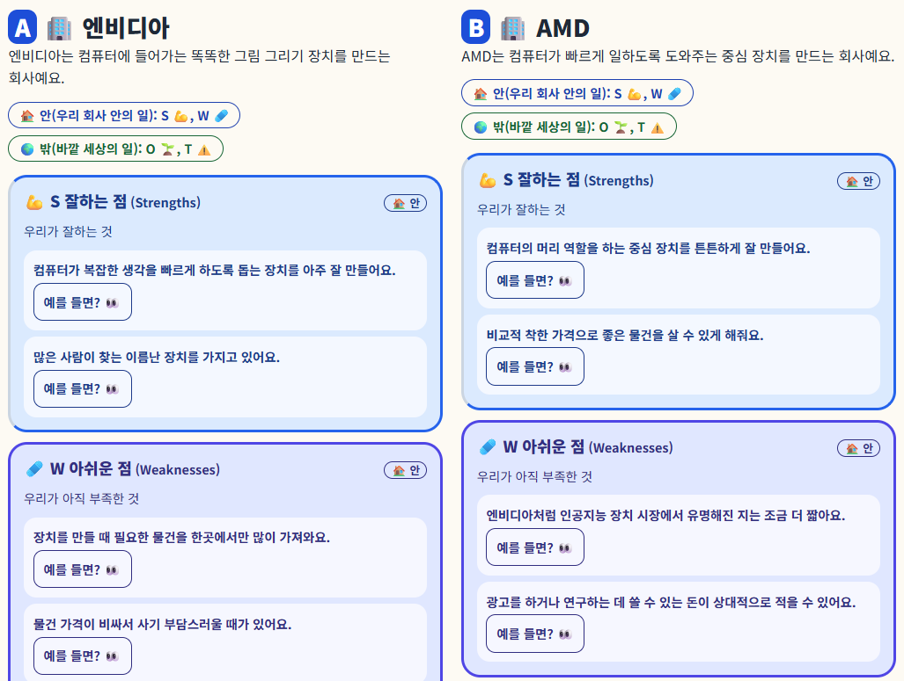
실습 06완성된 앱 써보기
엔비디아 vs AMD
비교 결과
비교 결과
엔비디아가 잘하는 점
AMD가 잘하는 점
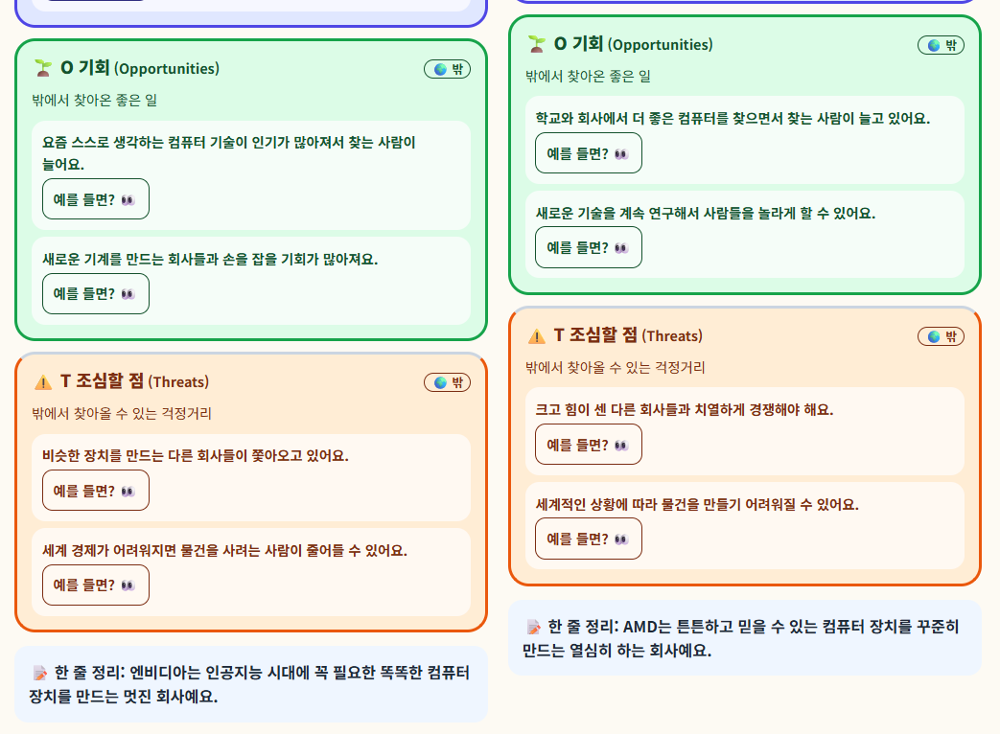
실습 06완성된 앱 써보기
기회 · 조심할 점
그리고 한 줄 정리
그리고 한 줄 정리
O기회 / T · 조심할 점
한 줄 정리
경쟁이 심하다 — 위협은 비슷
개선 ① — 다시 Claude Code로
추가 요청
SWOT의 개념을 쉽게 설명해서 사이트에 적어 줘
앱 살펴보기
부족한 점 깨닫기
추가 요청
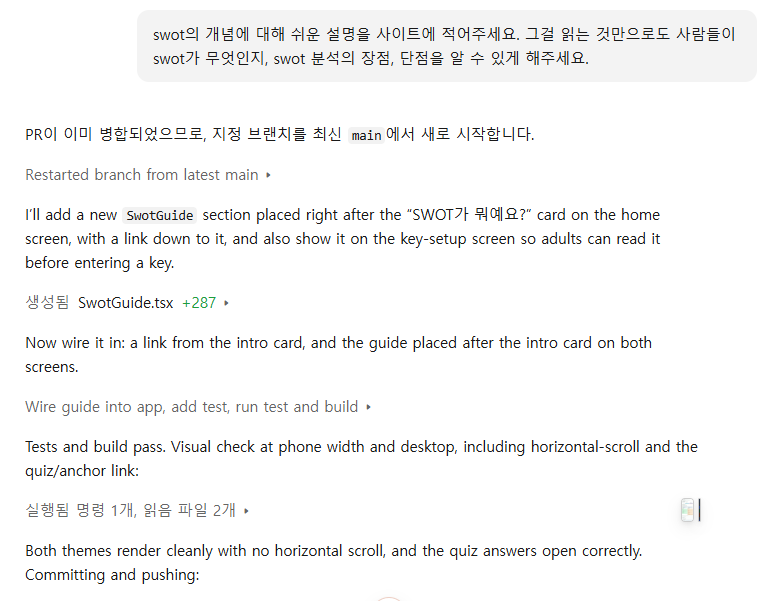
실습 07개선 ① 쉬운 설명
추가 요청 ①
쉬운 SWOT 설명
쉬운 SWOT 설명
SWOT 개념을 쉽게 설명해서
사이트에 적어 달라
장점 · 단점까지
→ 코드를 쭉 짭니다
고민한 흔적이 곧 평가 근거
“내 사이트, 뭐가 부족하지?”
머리를 쓰고
과정을 캡처해
과제로 제출
과제로 제출
얼마나 고민했는지
확인 가능
확인 가능
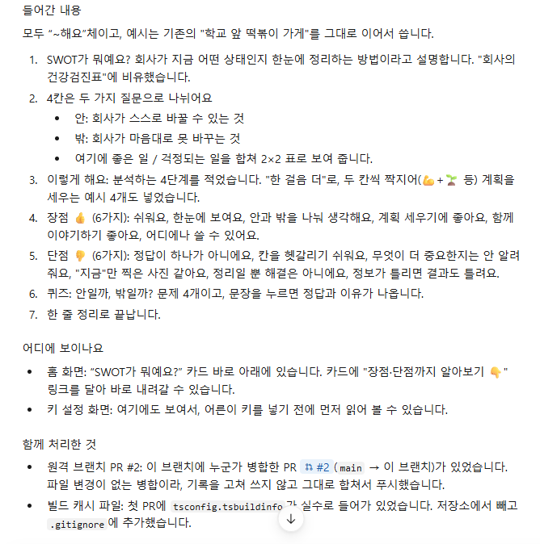
실습 07개선 ① 쉬운 설명
SWOT 설명
추가 완료
추가 완료
장점 · 단점 6가지씩
브랜치에 올렸대요
병합까지
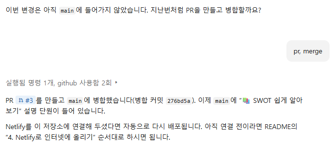
실습 07개선 ① 쉬운 설명
PR 만들고
병합할까요?
병합할까요?
Claude가 먼저 물어봐요
‘pr, merge’ 한마디면 끝
코딩 끝 → PR → merge
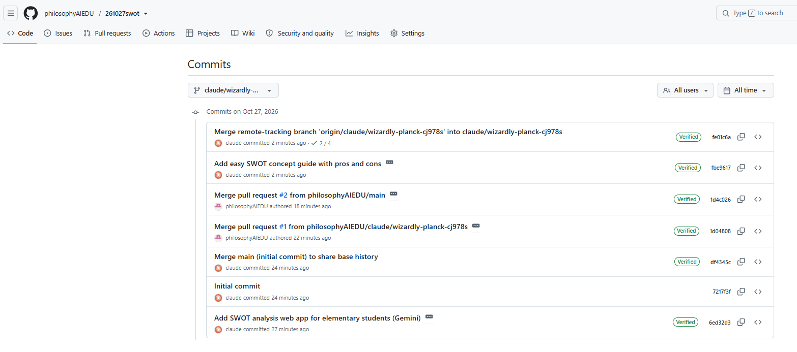
실습 08커밋 기록 확인
커밋 기록
확인하기
확인하기
Code → Commits
하나씩 세어 보면…
지금까지 7번!
0번 커밋
목표 10회
커밋 10회, 생각보다 어렵지 않아요
1merge도 커밋으로 셉니다
2한 번 수정해도 커밋이 세 번쯤 생기기도
310회가 된 화면을 캡처해서 제출
커밋 기록을 보면 알 수 있어요
AI로 한 번에 만든 앱
고민하고 머리를 많이 쓴 앱
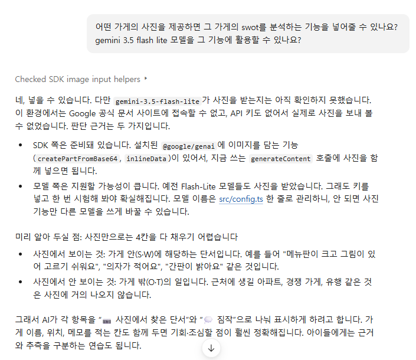
실습 09개선 ② 사진 분석
추가 요청 ②
가게 사진 → SWOT
가게 사진 → SWOT
가게 사진을 주면 SWOT 분석
Flash-Lite가 사진도 읽을까?
“해보겠습니다”
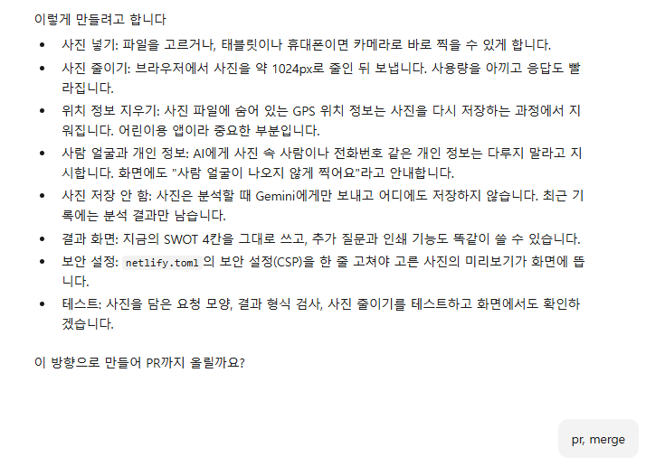
실습 09개선 ② 사진 분석
다 만들었으니
PR 할까요?
PR 할까요?
사진 넣기 · 개인정보 보호까지
→ ‘pr, merge’
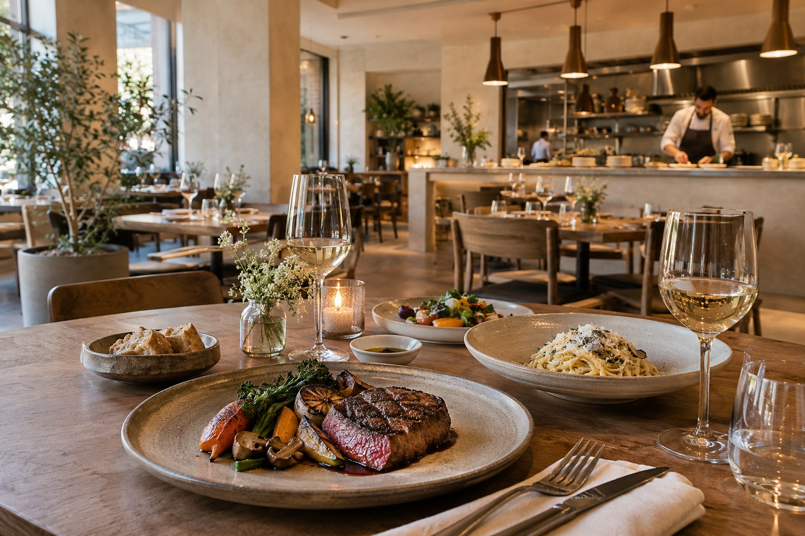
실습 09개선 ② 사진 분석
테스트 사진 ①
깔끔한 레스토랑
깔끔한 레스토랑
아주 깔끔한 레스토랑
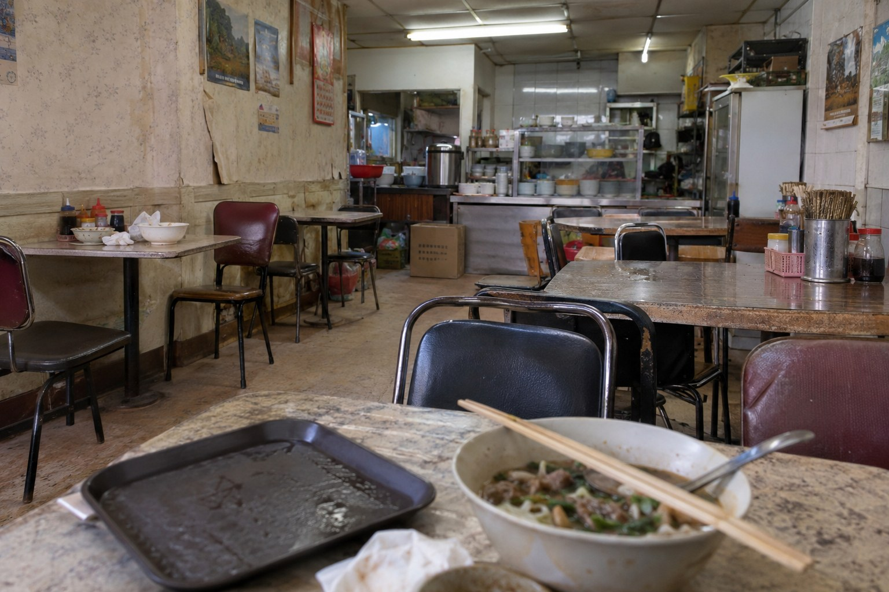
실습 09개선 ② 사진 분석
테스트 사진 ②
위생이 아쉬운 가게
위생이 아쉬운 가게
조금 지저분해 보이는 사진
두 사진 모두
AI로 만든 사진이에요
AI로 만든 사진이에요
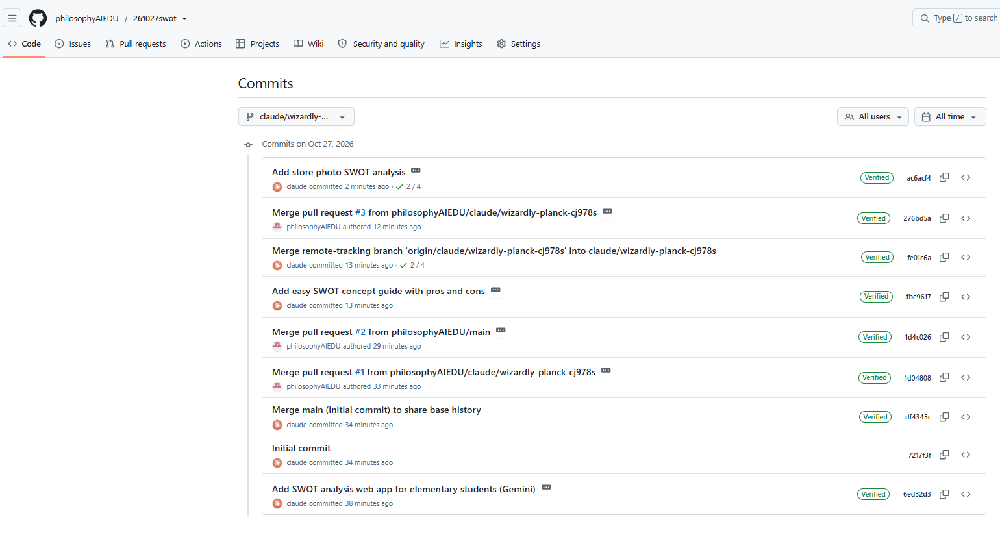
실습 09개선 ② 사진 분석
커밋은
지금 몇 번?
지금 몇 번?
하나, 둘, 셋 … 아홉
커밋 9번
한 번만 더 하면 제출 가능!
0번 커밋
목표 10회
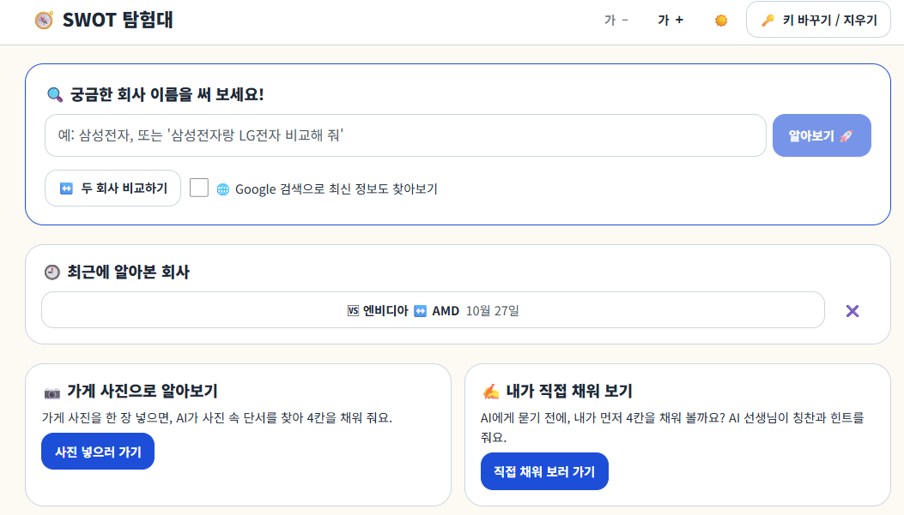
실습 09개선 ② 사진 분석
새 기능이
들어왔어요
들어왔어요
가게 사진으로 알아보기
→ 사진 넣으러 가기
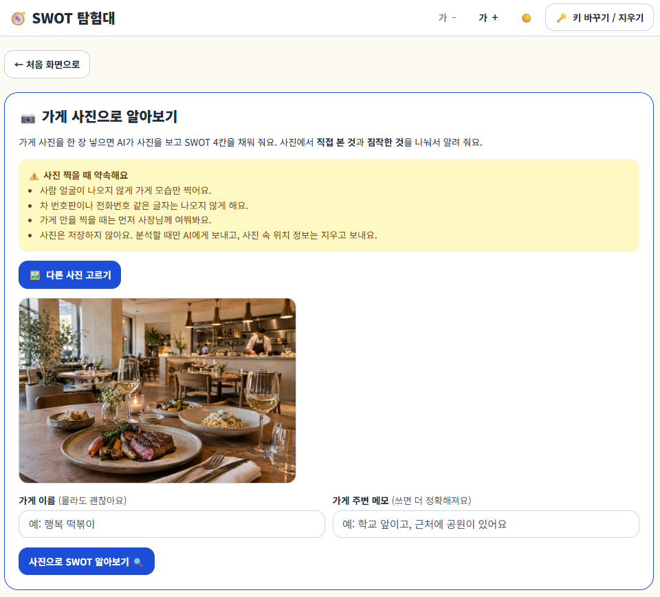
실습 09개선 ② 사진 분석
사진 고르고
분석 시작
분석 시작
사진 고르기
레스토랑 사진 넣기
사진으로 SWOT 분석해보기
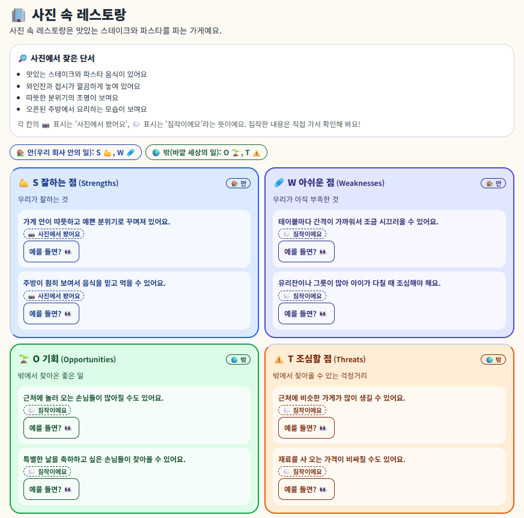
실습 09개선 ② 사진 분석
사진만 보고
SWOT 분석!
SWOT 분석!
S따뜻하고 예쁜 분위기
S주방이 훤히 보여요
실습 09개선 ② 사진 분석
정말 사진을
보고 있네요
보고 있네요
셰프가 일하는 주방이 보여요
→ 진짜 사진을 읽고 분석
실습 09개선 ② 사진 분석
본 것과
짐작한 것을 구분
짐작한 것을 구분
T비슷한 가게가 많을 수도
짐작은 ‘짐작이에요’
본 건 ‘사진에서 봤어요’
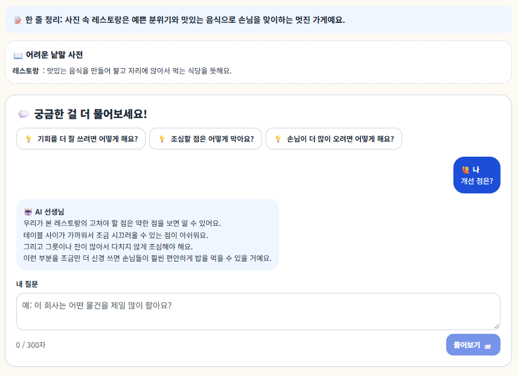
실습 09개선 ② 사진 분석
궁금한 걸
더 물어보기
더 물어보기
Q. 개선점은?
A. 약한 점을 보면 알 수 있어요
테이블이 가까워 시끄러울 수 있어요
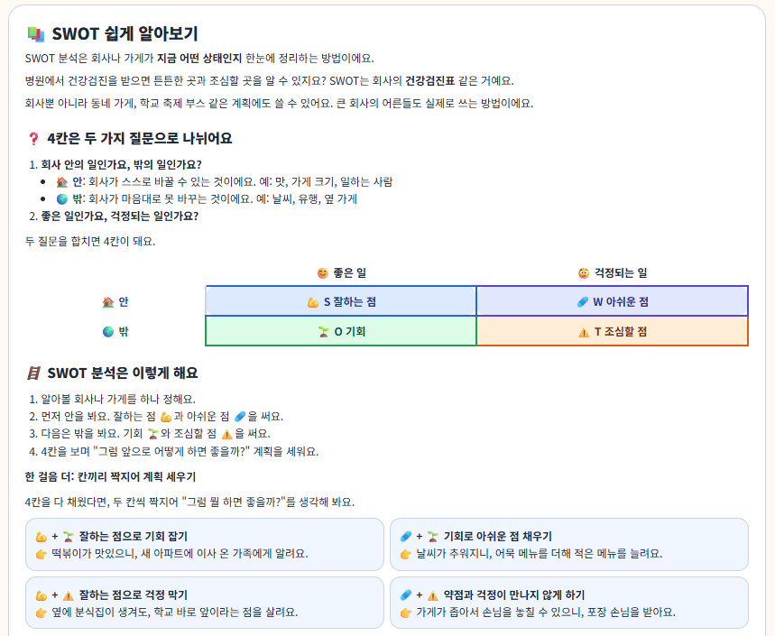
실습 09개선 ② 사진 분석
SWOT
쉽게 알아보기
쉽게 알아보기
쉬운 설명을 넣어 달라고 했죠
SWOT, 한 장으로 정리
😊 좋은 일
😟 걱정되는 일
안내부
S잘하는 점
W아쉬운 점
밖외부
O기회
T조심할 점
실습 09개선 ② 사진 분석
SWOT 분석은
이렇게 해요
이렇게 해요
① 회사나 가게 하나 정하기
② 안을 봐요 — S · W
③ 밖을 봐요 — O · T
④ 앞으로의 계획 세우기
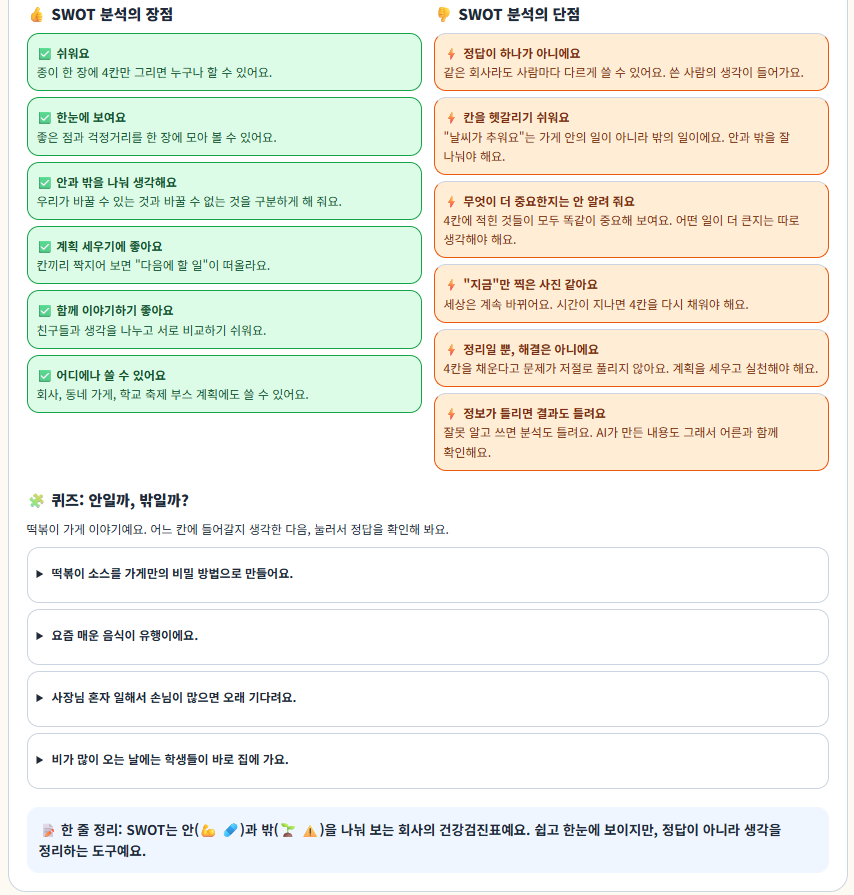
실습 09개선 ② 사진 분석
SWOT의
장점과 단점
장점과 단점
장점 · 쉽다, 한눈에 보인다
단점 · 정답이 하나가 아니다
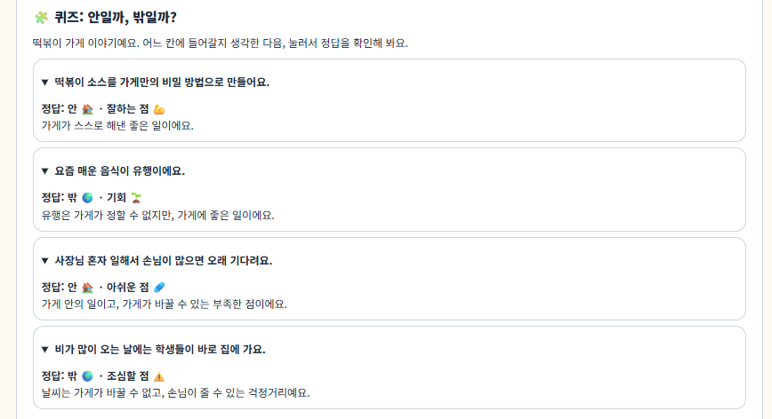
실습 09개선 ② 사진 분석
퀴즈:
안일까, 밖일까?
안일까, 밖일까?
Q. 떡볶이 소스를 가게만의 비법으로
내부 요인? 외부 요인?
정답 · 안 + 잘하는 점 (S)
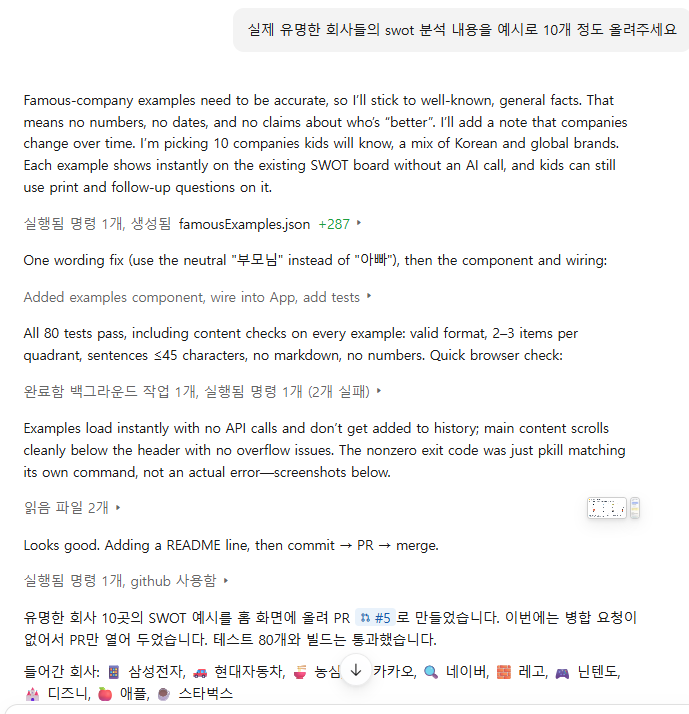
실습 10개선 ③ 유명 회사 예시
추가 요청 ③
유명 회사 예시
유명 회사 예시
실제 유명한 회사들의
SWOT 예시 10개 올려 달라
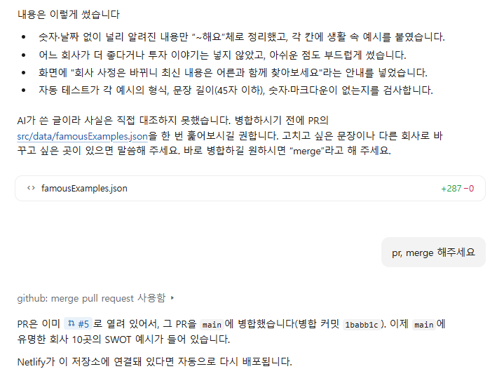
실습 10개선 ③ 유명 회사 예시
코드 완성 →
PR merge
PR merge
famousExamples.json 추가
‘pr, merge 해주세요’
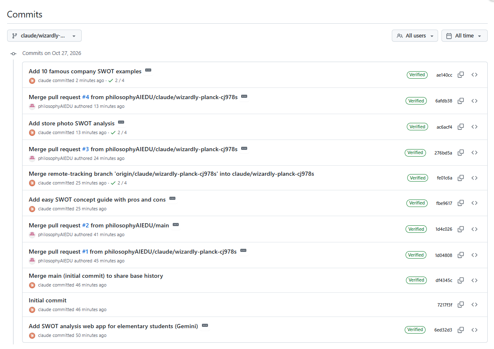
실습 10개선 ③ 유명 회사 예시
드디어
커밋 10회 돌파!
커밋 10회 돌파!
저장소 → Commits
하나, 둘 … 열하나
이제 과제 제출 가능!
이 화면을 캡처해서 제출
0번 커밋
목표 10회
평가 항목 ③ 충족
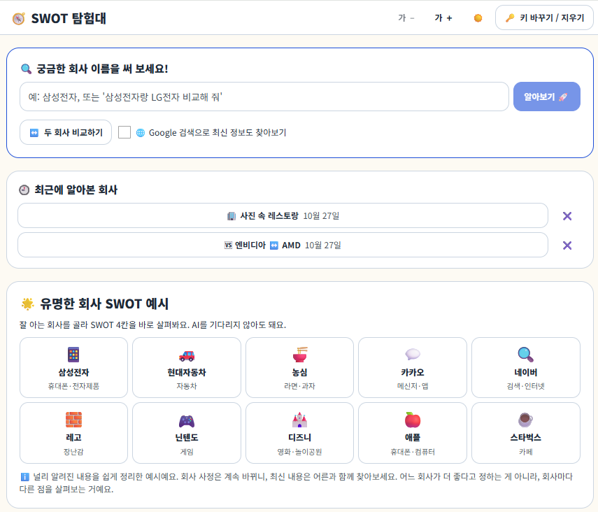
실습 10개선 ③ 유명 회사 예시
유명한 회사
SWOT 예시
SWOT 예시
삼성전자 · 현대자동차
카카오 · 네이버
닌텐도 · 디즈니 …
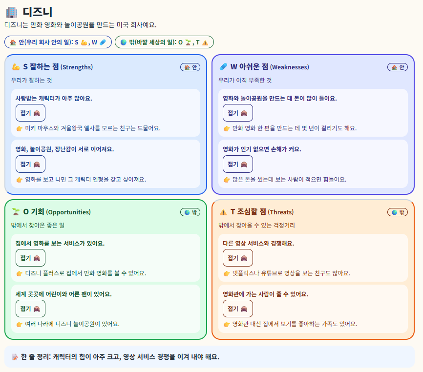
실습 10개선 ③ 유명 회사 예시
디즈니를
눌러 보면
눌러 보면
S사랑받는 캐릭터가 많아요
W영화가 인기 없으면 손해
잘 아는 회사로 SWOT 감 잡기
교수님들을 위해 오늘 보여 드린 것
AI 시대의 과제 제안
직접 해 본 과정
과정을 캡처해서
보내고
보내고
결과물 앱을
들고 나와 시연
들고 나와 시연
평가 항목 다시 보기
1첫 프롬프트 10줄 이상Claude Code에 넣은 첫 요청
2과정을 전부 캡처툴 · 시간 · GitHub · 배포
310회 이상 개선GitHub 커밋 기록 제출
4차별점을 직접 시연장점 · 특이점을 설명
학생은 생각할 수밖에 없습니다
AI 시대의 어려움
AI가 글을
너무 잘 쓴다
너무 잘 쓴다
과제를
대신 써 준다
대신 써 준다
평가하기가 너무 어려웠다
그래서 아예
AI를 제대로, 많이, 잘
앱을 만들고
많이 고쳐 보고
시연까지
하나의 대안일 뿐,
정답은 아닙니다
정답은 아닙니다
아이디어가 있으신 교수님,
이미 나만의 방식이 있으신 분은
댓글로 공유해 주세요
이미 나만의 방식이 있으신 분은
댓글로 공유해 주세요
AI 시대, 변화가 정말 큽니다
늘 노력하시는
교육자분들
교육자분들
존경합니다
필로소피AI 교육
01들어가며
02AI 시대의 과제
03평가 항목 4가지
04직접 해 보기
05정리
감사합니다, 선생님들
AI 시대의 과제,
함께 고민해요
함께 고민해요
좋아요
구독
필로소피 AI 교육
안녕하세요 필로소피입니다 :)
저번 시간에 이어서
AI 시대의 과제에 대해서 말씀을 드리려고 하는데요
많은 교수님들이 고민을 가지고 계십니다
학생들이 AI를 활용해서
과제를 해오기 때문에
그 과제를 어떻게 평가해야 될지에 대한 고민을 갖고 계시는 건데요
그래서 "AI를 쓸 거면 제대로 써봐라"라는 식으로
학생들이 AI를 활용해서
과제를 할 때
어떤 식으로 과제를 내주면
좋을까에 대해서 고민을 해봤고
그 과제를 제가 직접 해본 과정을 보여드리려고 합니다
그러니까 옛날 같으면 옛날 같으면 과제가 이런 식이겠죠
SWOT의 개념을 설명하고
엔비디아랑 AMD를 비교한 글을
A4, 다섯 장 이내로 작성해 와라
이게 옛날식의 과제라면
요즘식의 과제는 차별점이 있는
SWOT 분석 앱을 만들고
그 앱으로 NVIDIA와 AMD를 비교하세요
차별점이 있는 앱이란
애널리스트를 위한 SWOT 분석 앱 아니면
개발자들을 위한 SWOT 분석 앱이든
다른 사람이 만들지 않았을 법한
그러한 특이한 매력적인 분석 앱을 뜻합니다
그래서 AI를 적극 사용해도 됩니다
AI를 사용한 과정은
전부 캡처해서 제출하세요
과정이 자세할수록
높은 점수를 받을 수 있습니다
그리고 평가 항목 1번
SWOT 앱을 만들 때
첫 프롬프트는 열 줄 이상 쓰세요
SWOT 앱에 대한 설명을 직접 입력해도 되고,
이 프롬프트조차도 AI를 활용해서 만들어도 됩니다
대신 그 프롬프트를 어떻게 만들었는지
캡처를 제출하세요
이번 앱을 만드는 과정을 캡처해서
하나하나 과정별로 제출하세요
어떤 AI 툴을 썼는지,
클로드 코드를 썼는지,
안티그래비티를 썼는지,
코덱스를 썼는지 보여주고
총 소요 시간도 얼마나 걸렸는지 보여주고
깃허브에 어떻게 올렸고,
커밋은 몇 번 했고,
어디에서 배포했는지,
넷리파이에서 배포했는지,
버셀에서 배포했는지
다 캡처해서 보여주세요
그리고 3번 완성된,
완성된 앱을 10회 이상 개선시켜 보세요
그래서 깃허브 커밋 기록을 제출해 주세요
깃허브 커밋 기록이란
깃허브를 쓰는 사람이
코드를 바꾸고 올리게 되면
기록이 남는 걸 뜻합니다
그래서 학생들이 직접
자기 앱의 부족한 점을 개선을 하고
그 횟수가 10회 이상이면 됩니다
그리고 마지막 4번
내가 만든 SWOT 앱이 다른 사람의 앱과 무엇이 다른지,
본인의 앱을 다른 사람들 앞에서 띄워놓고
TV에다가 띄워놓고
아니면 컴퓨터에다 띄워놓고
시연을 해야 합니다
그래서 단 한 줄로 이런 앱을 만들어 달라고 요청한 사람과
AI를 썼지만 여러 차례 바꿔보고 고민해 본 사람과는
큰 차이가 있을 겁니다
아주 간단하게 이 앱을 만들지 말고
고민을 많이 해보고
머리를 많이 써서
이 앱을 만들어보면 좋겠습니다
AI 많이 써도 됩니다
이게 이제 제가 생각한 AI 시대의 과제인데요
제가 직접 이 과제를 어떻게 했는지 보여드리도록 하겠습니다
먼저 클로드 프로젝트를 활용했습니다
그래서 코딩 AI 프롬프트 전문가
팀이라는 프로젝트를 활용해서
제가 필요한 SWOT 앱을 설명했습니다
초등학생도 이해할 수 있는 SWOT 분석 앱을 만들어 주세요
Gemini 3.5 Flash-Lite 모델을 활용해서
질문을 할 수 있도록 해주세요
사용자가 API 키를 넣도록 해주세요
아주 쉬운 용어로 설명해 주시고
사용자가 두 회사를 언급하면
두 회사를 비교해주는 기능도 만들어 주세요
이렇게 요청했습니다
이렇게 요청했더니
이 프로젝트가 이러한 프롬프트를 줍니다
작업 목표, 배경, 컨텍스트, 기술 스택
이게 이제 열 줄이 넘는 거죠
우리가 처음 클로드 코드에 넣을 프롬프트가 생겼고
이게 열 이상 됐습니다
그러면 이제 첫 번째 평가 항목은 만족시키는 겁니다
처음에 클로드 코드에 넣을 프롬프트를 열 줄 이상으로 하라고 했죠
그리고 이 과정을 캡처해서 제출하면 됩니다
그리고 이렇게 클로드 코드에다가
프롬프트를 넣어주면 되고
이게 열 줄 이상이 된 거죠 좋아요
그래서 이렇게 입력을 하면 되고
그랬더니 이렇게 코드를 쭉 작성합니다 작성하고
내려가 보면
이렇게 끝까지 코드를 작성했다고 하고
PR을 만들지 않았다고 해요
그럼 PR을 만들어 달라고 합니다
PR이란 건 Pull Request예요
그래서 Github에다가 이제 우리가
이러한 코드를 짰으니까
올리겠다라고 요청을 하는 거예요
그래서 PR을 만들지 않았다
이런 표현을 하면
PR을 만들어 달라고 하시면 돼요
그리고 나면 PR을 만들었다고 하죠
그리고 나면 이제 머지 병합을 해달라고 하면 됩니다
그래서 PR 그 다음에 머지
그러니까 우리가 올린 요청
이 PR, Pull Request를
이제 병합한다 merge 합쳐준다
기존의 코드와 합쳐준다라고 생각하시면 됩니다
그래서 PR merge
이 정도 용어는 알아두시면 좋습니다
그래서 main에 병합했습니다
코드를 병합했습니다라고 나오고
이제 이렇게 GitHub에 코드가 올라갔습니다
그래서 SWOT 앱이 이렇게 올라갔고
README 파일을 읽어보면
SWOT 탐험대
초등학생용 SWOT 분석 도우미에서 S란 건 뭐냐면 잘하는 점이래요 Strength
우리가 잘하는 것을 뜻하고
W는 뭐냐면 아쉬운 점이래요 Weaknesses
우리가 아직 부족한 것
O는 뭐냐면 기회래요
opportunities
밖에서 찾아온 좋은 일
밖이라는 거고
T 조심할 점 위협이죠 Threats
밖에서 찾아올 수 있는 걱정거리
SWOT라는 게 이런 거래요
이렇게 쭉 설명이 나와 있고
그러니까 이런 앱을 만들면서
학생들이 이렇게 학습을 할 수 있겠죠
그러니까 예전에는 SWOT가 뭔지
본인이 이렇게 워드 형태로
글을 작성해서 제출했다면
요즘은 AI가 글을 너무 잘 작성하니까
학생이 사고할 필요가 없게 된 거죠
그렇기 때문에 이렇게 복잡하게 앱을 만들고
본인이 수정하는 과정을 통해서
SWOT라는 것을 공부할 수 있게 하는 겁니다
그리고 넷리파이에서 이제 방금 전에 봤던
요 GitHub 레포지토리
261027swot 요 레포지토리를 연결해서 배포를 하면 됩니다
그래서 Add new project 하시고
GitHub 선택한 다음에
우리의 저장소 깃허브 저장소를 누르고
디플로이를 하면 이렇게 나옵니다
이렇게 초록색으로 앱 주소가 나오면 되고요
보니까 SWOT 탐험대에서
이렇게 제미나이 API 키를 설정하도록 되어 있습니다
제미나이 API 키는 구글 AI 스튜디오에 들어가셔서
API 키를 하나 만드시면 돼요
그래서 Create API 키를 하시면 되고
여기서 중요한 것은
제미나이는 일단 1분에 몇 회 정도는
무료 티어로도 쓸 수 있어요
그래서 API 키를 테스트하는 상황에서는
제미나이 API 키로
무료로 일단 써보시면 좋습니다
모든 모델을 무료로 쓸 수 있는 건 아니고요
무료로 수 있는 모델들이 있습니다
그래서 가장 최신 모델을 제외하고는
무료로 쓸 수 있으니까
모델을 한번 살펴보시면 좋겠습니다
그다음에 Gemini API 키를 이렇게 넣으시면 되고
이 기기에서 기억하기
내 컴퓨터에서만 요 버튼을 눌러주세요
다른 사람 컴퓨터라면
이 버튼을 누르지 마시고요
그래서 이러한 앱이 나왔습니다
궁금한 회사 이름을 써보고
두 회사를 비교해보고
내가 직접 SWOT를 채워 넣어 볼 수 있고
SWOT가 뭔지에 대한 설명도 이렇게 되어 있죠
잘하는 점,
아쉬운 기회,
조심할 점
그래서 예시는 학교 앞 떡볶이 가게
떡볶이 가게가 잘하는 점은,
장점은 학교 바로 앞에 있다
그래서 수업이 끝나면 걸어서 1분이면 간다
떡볶이 맛이 좋다
아쉬운 점은 가게가 너무 좁다
메뉴가 너무 적다
이런 식으로 SWOT라는 게
이런 거다라는 걸
우리가 이 앱을 보면서 배울 수 있고
만들면서도 익힐 수 있어요
그래서 학교 앞 떡볶이 가게에 대해서
이렇게 SWOT 분석한 예시 볼 수 있고
맛, 위치가 좋다
자리가 좋은 가게예요
메뉴를 더 늘리면 더 좋아질 겁니다
이런 식으로 마지막에 평가도 해주고
그리고 여기 두 회사 비교하기를 누르면
회사 A 엔비디아,
회사 B AMD 이거를 비교해 보실 수 있고
우리 과제에서 이 두 회사를 비교해 보라고 했잖아요
비교해 보니까
이렇게 쭉 나옵니다
엔비디아가 잘하는 점
AMD가 잘하는 점 쭉 나오고 기회,
조심할 점
한 줄 정리를 보면
엔비디아는 인공지능 시대에
꼭 필요한 똑똑한 컴퓨터 장치를 만드는
멋진 회사예요
AMD는 튼튼하고 믿을 수 있는
컴퓨터 장치를 꾸준히 만드는 회사예요
그래서 조심할 점
경쟁이 심하다
뭐 이런 식으로 조심할 점은 비슷하고
기회도 비슷한 것 같아요
좋습니다
이렇게 비교해 봤고
다시 클로드 코드로 와서
SWOT의 개념에 대해
쉬운 설명을 사이트에 적어달라라고
제가 추가 요청을 했어요
그러니까 지금 이 앱을 한번 살펴보고
학생들이 아 내 앱이 뭐가 부족하다라고 깨닫고
클로드 코드에 가서
추가 요청을 하는 거예요
그래서 저는, 저 같은 경우는
SWOT의 개념에 대해서
더 쉽게 설명해서
사이트에 적어달라
그걸 읽는 것만으로도
사람들이 SWOT가 무엇인지
SWOT 분석의 장점,
단점을 알 수 있게 해달라
이렇게 요청을 했어요
그랬더니 코드를 쭉 짭니다
그러니까 학생들도 본인의 사이트가
뭐가 부족한지 생각을 해야겠죠
머리를 써야겠죠
그러한 과정을 이렇게 캡처해서
과제로 과제물로 제출하라고 하는 겁니다
그러면 학생이 얼마큼 고민을 했는지
머리를 썼는지
우리가 체크할 수 있겠죠
그랬더니 이렇게 쭉 나왔어요
장점, 단점
여섯 가지씩 이렇게 넣었대요
그리고 브랜치에 올렸대요
그래서 병합까지 했다
이렇게 나옵니다
그래서 PR을 만들고
병합할지 물어보네요
그래서 제가 PR 머지 이렇게만 치면
우리가 방금 만든 코드를 병합, 병합합니다
클로드 코드 쓰실 때
AI 코드를 쭉 짜잖아요
그 마지막에 PR을 만들고
merge까지 해준다라고 생각하시면 돼요
그러면 클로드 코드가
이제 깃허브에다가 코드를 올려줍니다
그리고 이제 우리의 깃허브 저장소에 가보면
코드에 요쪽 쯤에
요쪽 쯤에 Commit이라고 있어요 Commit
그걸 누르면 이렇게 여태까지
우리가 몇 번 Commit을 했는지
그 횟수가 나와요
한 번, 두 세 번,
네 번, 다섯, 여섯,
일곱 번
지금 일곱 제가 코드를 바꾸고
그게 이제 커밋이 된 거예요
첫 번째 커밋
이런 식으로 머지
머지까지 세기 때문에
생각보다 이 10회 채우기가 많이 어렵지 않습니다
한 번 수정해도
이 커밋을 뭐 세 번 정도 할 수도 있어요
그래서 학생들에게 이 커밋 기록이
10회가 되면 된다라고
우리가 얘기했죠
그러니까 요 화면을 캡처해서
이 10회가 된 화면을 캡처해서
학생들이 과제로 제출해 주면 됩니다
그러면 아 이렇게 열 번 정도
스스로 앱을 고쳤구나라고
우리가 알 수 있습니다
그래서 AI를 활용해서
한 번만에 만든 앱이 아니고
고민을 많이 했고
머리를 많이 쓴 앱이다라고
우리가 수 있는 겁니다
그리고 제가 또 추가 요청을 했어요
이러한 기능이 있으면 어떨까?
라는 생각을 제가 해봤어요
어떤 가게 사진을 제공하면
그 가게의 SWOT를 분석하는 기능을 넣어달라는 거죠
그리고 제미나이 3.5 Flash-Lite 모델을 그대로,
그러니까 텍스트를 생성해줬던 모델을
그대로 써도 되는지
그래서 이 모델이 사진을 읽고 보고
우리에게 답을 줄 수 있는지를 물어봤어요
그랬더니 해보겠대요
그래서 다 코드를 짰으니
PR를 할지 물어봅니다
그래서 제가 PR 머지 해달라고 요청했습니다
그리고 제가 제공한 사진은 이거였고
아주 깔끔한 레스토랑이죠
이, 이 사진을 제공했고
한번 조금 위생이 안 좋아 보이는 사진도 제공했습니다
요 두 사진 다 제가 그냥 AI로 만든 사진이에요
실제 사진은 아닙니다
그래서 요 두 사진을
제가 준비해 놨고 커밋을 보니까
이제 하나, 둘, 셋, 넷, 다, 여, 일곱, 여덟, 아홉 번
이제 커밋을 아홉 번 했네요
방금 기능까지 추가해서
그러니까 학생의 경우는
커밋을 이제 한 번만 더 하면
이제 요거를 과제로 제출할 수 있죠
요 화면을 캡처해서 제출하면 돼요
좋아요
봤더니
가게 사진으로 SWOT 분석하기가 들어가 있어요
사진 넣으러 가기
요거를 누르면 되고
사진 고르기 해서
제가 이 레스토랑 사진을 넣었어요
그래서 사진으로 SWOT 분석해보기
분석했더니 잘하는 점
이 가게의 장점은 가게 안이 따뜻하고
예쁜 분위기로 꾸며져 있대요 그쵸?
주방이 훤히 보여서
음식을 믿고 먹을 수 있대요
예, 보니까
여기에 요 셰프가 요 바깥에 있는 게 보여요
아, 그러니까 진짜 이 사진을 보고
분석해 주는 거네요
조심할 점
근처에 비슷한 가게가 많을 수 있다
뭐 이런 건 짐작은 짐작이라고
이렇게 표현을 해주네요
사진에서 본 건 사진에서 봤다고 해주고
그리고 밑에 궁금한 걸
더 물어볼 수 있는 란이 있어요
궁금한 걸 더 물어보세요
개선점은 뭔지 물어보니까
우리가 본 레스토랑의 고쳐야 할 점은
약한 점 부분을 보면 알 수 있대요
테이블 사이가 가까워서
조금 시끄러울 수 있다
사진을 보고
그걸 분석해 준 거죠
좋아요
그리고 SWOT를 쉽게 알아보게
제가 이제 쉬운 설명을 넣어달라고 했죠
그랬더니 이렇게 쉽게 써줬어요
좋은 일,
걱정되는 일
좋은 일은 왼쪽에 써 있고
걱정되는 일은
오른쪽에 써 있다
그리고 아... 안,
우리 내부적인 요인은
위쪽에 써 있고
바깥의 요인은 밑에 써 있다
SWOT 분석은 이렇게 해요
알아볼 회사나 가게를 하나 정하고
먼저 그 회사의 내부를 봐요
잘하는 점과 아쉬운 점을 쓰고
그다음은 밖을 봐요
그 회사 밖에 있는 기회와 조심할 점을 쓴다고 합니다
그리고 그럼 앞으로 어떻게 하면
좋을까를 계획 세운다고 합니다
이게 SWOT 분석이라고 하고
SWOT 분석의 장점, 단점
쭉 뭐 쉽다,
한눈에 보인다
정답이 하나가 아니라는 게 또 단점이고
이런 식으로 쉬운 설명도 넣어놨고
퀴즈도 적어놨어요
그래서 떡볶이 소스를 가게만의 비밀 방법으로 만들어요
이게 내부적인 요인인지
외부적인 요인인지도
우리가 알 수 있도록
이렇게 퀴즈도 만들어줬고
가게가 스스로 해낸 좋은 일이에요
내부 그리고 잘하는 점이라고 말해주네요
그리고 이제 제가 또 추가적인 요청을
클로드 코드에게 했어요
실제 유명한 회사들의 SWOT 분석 내용을
예시로 열 개 정도 올려달라
이렇게 제가 요청을 했습니다
그랬더니 이제 또 코드를 다 짰다고 하죠
그래서 제가 PR merge 해달라고 요청했습니다
그래서 깃허브 레포지토리
우리의 저장소에 가보니까
이제 커밋이 하나, 둘, 넷, 다섯, 여섯, 일곱, 여덟, 아홉, 열, 열하나가 됐습니다
이제 과제를 제출할 수 있게 됐습니다 와!
학생들이 이제 이 과제를 제출할 수 있게 된 거고요
이 부분을 캡처해서 제출하면 됩니다
그리고 이제 우리 앱에 유명한 회사의 SWOT 예시가 들어가 있어요
삼성전자, 현대자동차, 카카오, 네이버, 닌텐도, 디즈니
디즈니 이렇게 다 예시가 들어가 있고
디즈니를 누르고 들어가 보니까
디즈니의 장점,
사랑받는 캐릭터가 아주 많아요
아쉬운 점
영화가 인기 없으면 손해가 커요
이런 식으로 디즈니를 분석해줬습니다
그래서 우리가 디즈니라는 회사는 잘 알잖아요
그래서 아, 이 회사를 분석한 내용을 보면서
SWOT라는 게 무엇인지
우리가 확 더 깨달을 수 있게 되는 거죠
그래서 교수님들을 위해서
제가 AI 시대의 과제에 대해서 말씀을 드렸고
제가 직접 그 과제를 어떻게 했는지를 보여드렸습니다
그래서 학생님들이 이 과정을 이렇게 캡처해서 보내면 되고
결과물 앱을 가지고 나와서
시연을 하면 됩니다
그러니까 첫 번째,
첫 번째 클로드 코드에 제출한 프롬프트가
열 줄 이상이면 되고요
두 번째,
이 과정을 전부 캡처해서 제출하면 됩니다
그리고 완성된 앱이
이제 10번 이상 개선되었으면 됩니다
그래서 Github 커밋 기록을 학생...
학생이 제출하면 됩니다
그래서 그게 10회 이상이면 되는 거고
그 과정에서 학생이 고민을 많이 했겠죠
그러한 과정을 평가하는 거고
마지막 학생들이 만든 앱이
이 SWOT 앱이 다른 사람의 앱과 무슨 차별점이 있는지,
어떤 장점이 있는지,
어떤 특이점이 있는지를
직접 시연해야 합니다
그래서 학생들,
다른 학생들 앞에서
이 내 앱에 대해서 설명을 할 수 있어야 됩니다
이 과정에서 학생들이 생각을 할 수 밖에 없겠죠
그래서 AI 시대에
AI들이 글을 너무 잘 쓰기 때문에
과제를 대신해 주는 경우가 많았죠
그래서 학생들이 AI로 글을 써왔,
써온 경우도 많았고,
그런 경우에 평가하기가 너무 어려웠습니다
그래서 아예 AI 제대로 많이 써서 잘 써서
이런 앱을 만들고 많이 고쳐보고
시연도 해봐라
이런 식으로 AI 과제를
이런 식으로 과제를 내주면 어떨까 싶어서
하나의 제가 대안을 말씀드린 거고
이게 정답은 아닙니다
하나의 방법일 뿐이고요
제 영상을 보시고
아이디어가 있으신 교수님들이나
이미 본인만의 방식이 있으신 분들은
댓글로 공유해 주시면 감사하겠습니다
AI 시대에 정말 변화가 큽니다
이 큰 변화 속에서도
학생들을 위해서
늘 노력하시는 우리 교육자분들
정말 정말 대단하시다고 말씀드리고 싶고
존경한다고 말씀드리고 싶습니다
감사합니다 선생님들